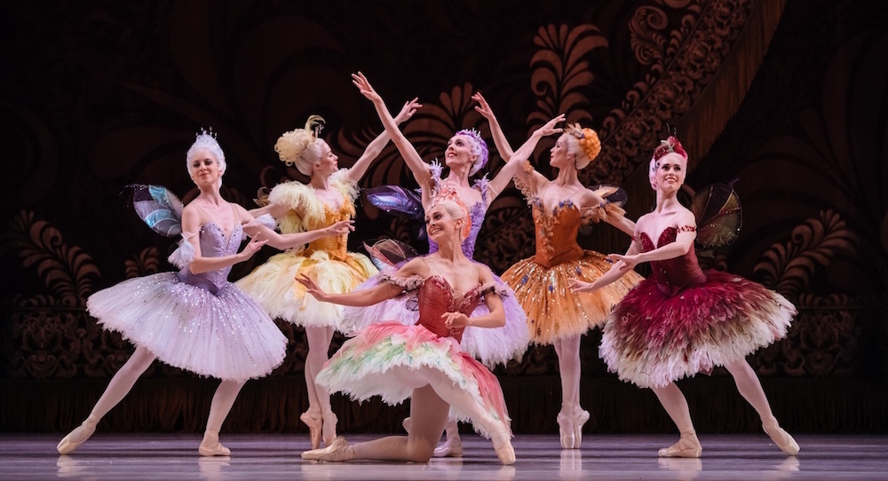

A Bela Adormecida
O rei Florestan e a rainha convidaram todas as fadas para serem as madrinhas do batizado de sua filha recém-nascida, Aurora. Enquanto as fadas oferecem seus presentes ao bebê, um trovão anuncia a chegada da terrível fada Carabosse, que o mestre de cerimônias esqueceu de incluir na lista de convidados. Ultrajada, Carabosse anuncia que também dará um presente à bebê: quando Aurora completar 16 anos, ela irá se picar com uma agulha no dedo e então mergulhará num sono eterno. Felizmente uma das fadas madrinhas ainda não havia dado o seu presente, e então contraria Carabosse, prometendo que Aurora não mergulhará num sono eterno, e sim, cairá num sono que durará até que um príncipe a desperte com um beijo. Como precaução, o rei proíbe todos os objetos aguçados no seu reino.
Aurora completou 16 anos. Quatro príncipes vieram pedir a sua mão em casamento. A corte reúne-se nos jardins e os camponeses e crianças dançam com as grinaldas de flores. A princesa dança com os seus pretendentes. Entra em cena uma velha que lhe oferece um ramo de rosas. Aurora aceita o presente e encontra uma agulha entre as rosas, um objeto que nunca havia visto. Segura na mão e, durante a dança acidentalmente, fura-se num dedo. Parece desmaiar, mas depois recompõe-se. A dança torna-se vertiginosa e Aurora desmaia de vez. Neste momento, a velha tira o seu disfarce e se revela Carabosse, exultante por ter se cumprido o seu feitiço. Mas de imediato surge a fada lilás para reafirmar também a sua promessa. Um véu cai sobre a cena e cresce uma floresta mágica para esconder o castelo, o reino e todos os seus arredores.
Passaram-se 100 anos. O príncipe Désiré caça na floresta mágica. Num momento em que se afasta do seu grupo, a fada Lilás, que também é sua madrinha, mostra-lhe a imagem da princesa. Désiré implora à fada Lilás que o leve para junto de Aurora, assim os dois viajam num barco encantado até ao palácio. Seguindo a fada, Desiré entra no quarto onde dorme Aurora, no meio da corte enfeitiçada. Desperta-a com um beijo e todos acordam de volta à vida. Désiré pede a mão de Aurora em casamento e o rei Florestan e a rainha concedem-na com alegria.
A princesa casa-se com o príncipe e vivem felizes para sempre.